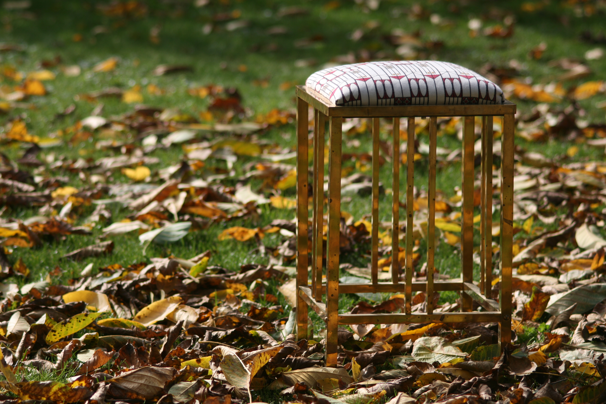
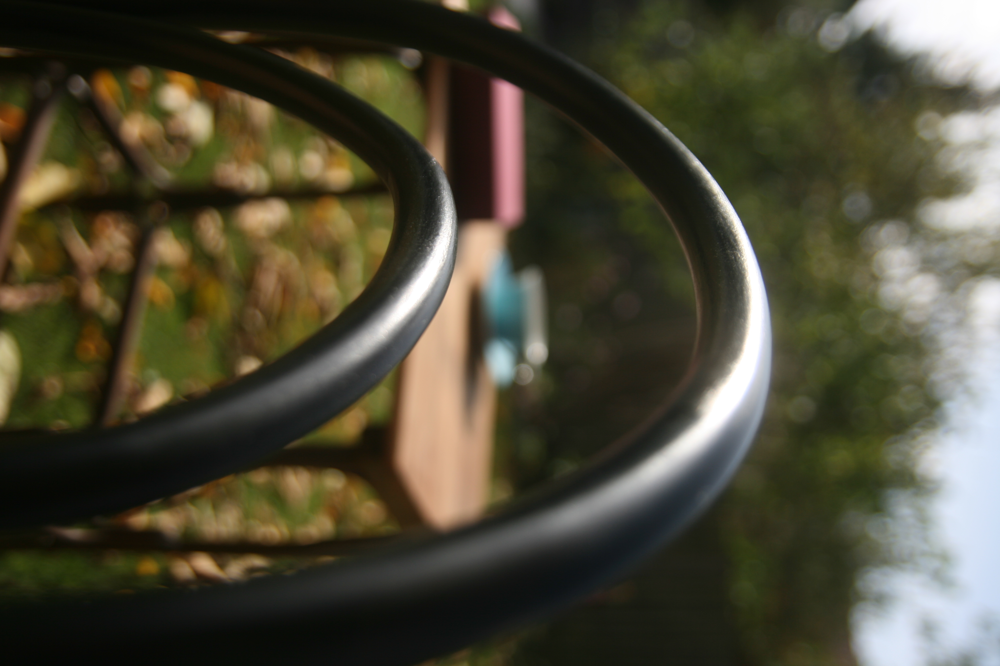
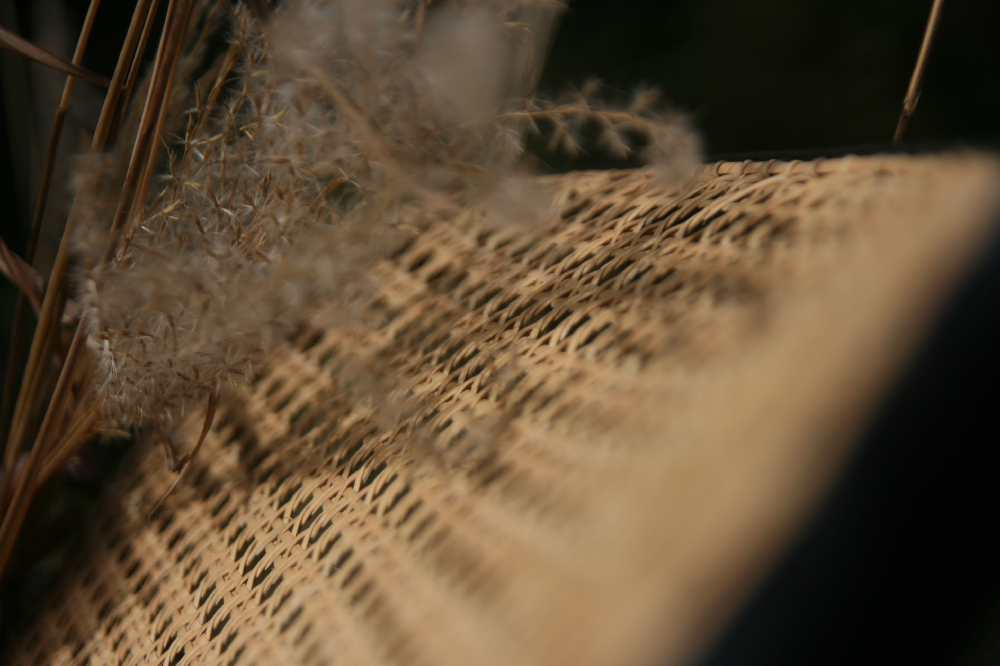

Mit Liebe zum Detail erwecke ich alte Sessel zu neuem Leben. In Handarbeit erneuere ich Wiener Geflecht und Bespannungen und versehe Holz mit neuem Glanz. So entsteht zeitloses Design für Möbelstücke, die Jahrhunderte überdauern.